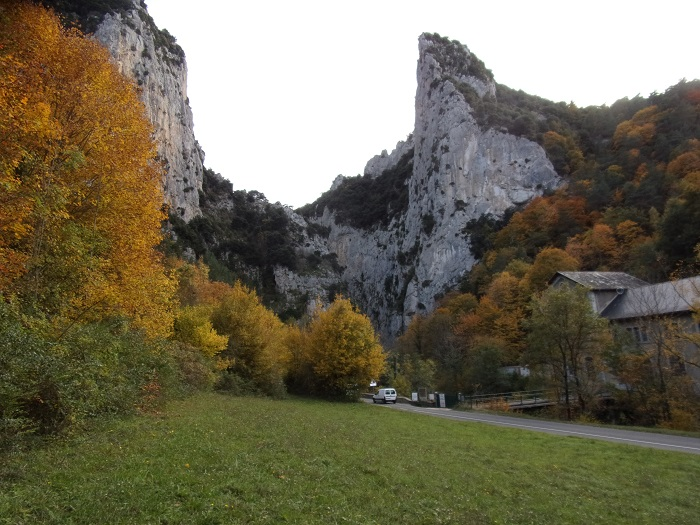
Situées dans la haute vallée de l'Aude, juste en amont de la commune d'Axat, les gorges de Saint Georges constituent l'un des passages les plus remarquables des Pyrénées audoises. Creusées par le fleuve Aude à travers un massif calcaire abrupt, elles forment un canyon étroit, sombre et vertigineux qui relie le pays de Sault au Fenouillèdes. Elles sont orientées Sud / nord et sont partagées entre les communes d'Axat (rive droite) et Artigues (rive gauche)
Bien que plus courtes que leurs voisines célèbres, les gorges de la Pierre-Lys situées quelques kilomètres en aval après Saint-Martin-Lys, les gorges de Saint Georges impressionnent par leur resserrement. Sur environ 300 mètres de longueur, les parois rocheuses s'élèvent à la verticale de part et d'autre du cours d'eau, ne laissant qu'un étroit passage au fond du défilé.
Traversées par la route départementale D118, qui mène vers Roquefort-de-Sault, Gesse et le Donezan, ces gorges représentent depuis des siècles un point de passage stratégique et un défi technique pour les aménagements humains.
Au-delà de leur intérêt géologique et touristique, les gorges de Saint Georges témoignent d'une riche histoire locale :
Ce dossier rassemble des photographies actuelles du défilé, des archives de la presse ancienne, des cartes postales d'époque ainsi que des itinéraires de randonnée permettant de découvrir les gorges depuis les hauteurs.
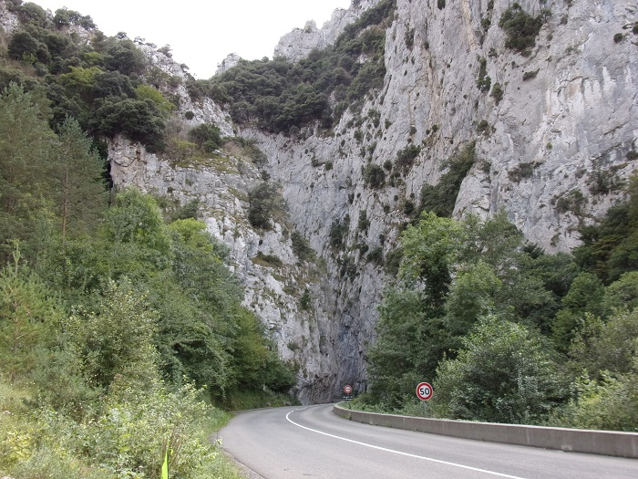
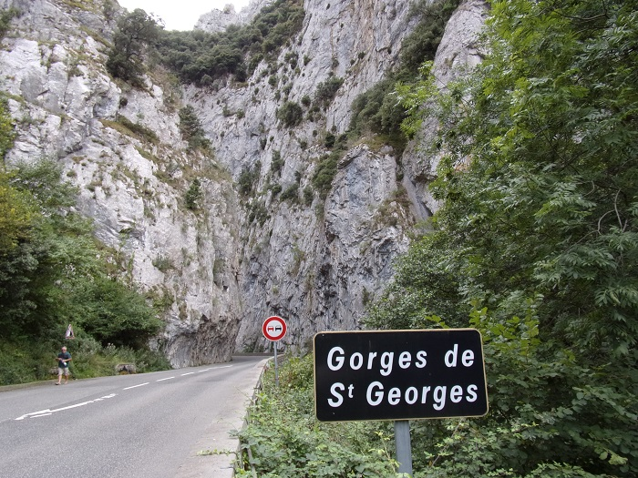
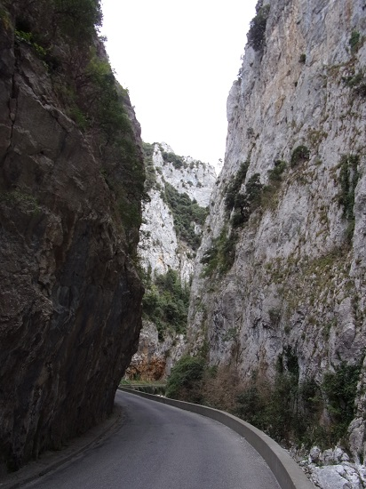
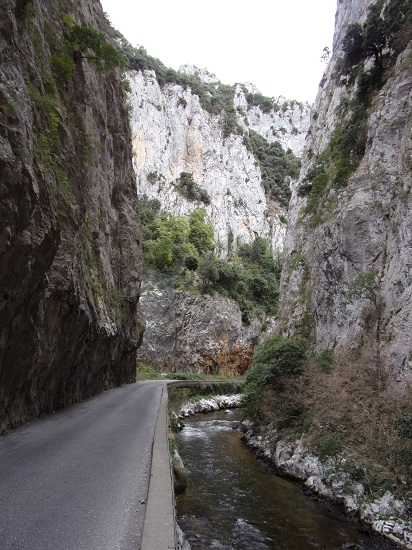
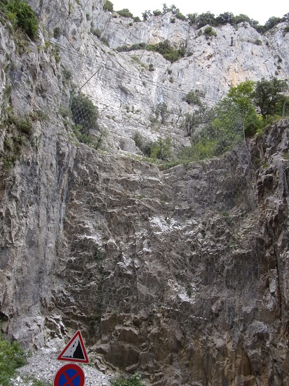
Au milieu des gorges, soit à 150 mètres de part et d'autre, se trouve un espace plus dégagé, volontairement creusé, protégé aujourd'hui par un filet métallique sur toute la hauteur. Etait-ce à cet endroit des gorges où les caches à mines, sensées faire s'écrouler les gorges en cas d'invasion espagnoles, étaient positionnées ?
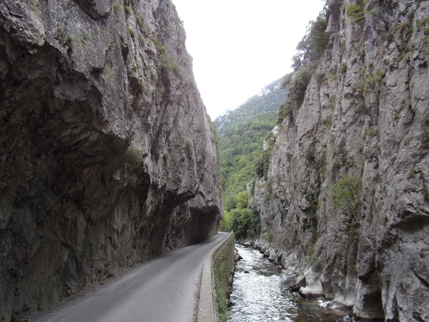
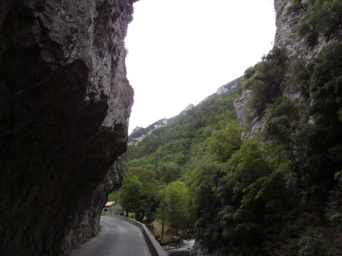
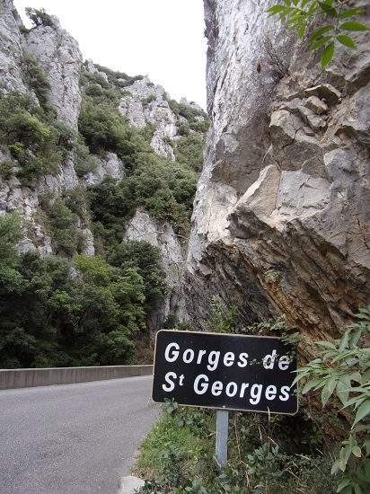
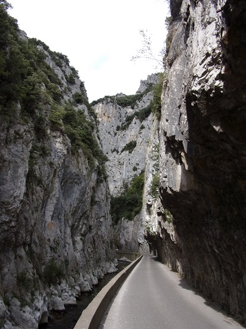
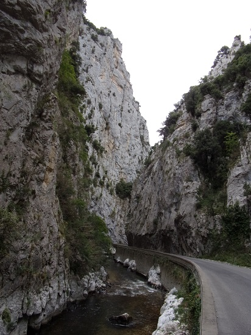
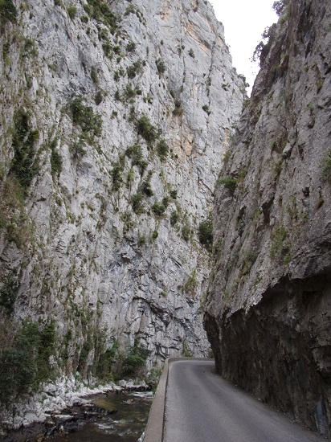
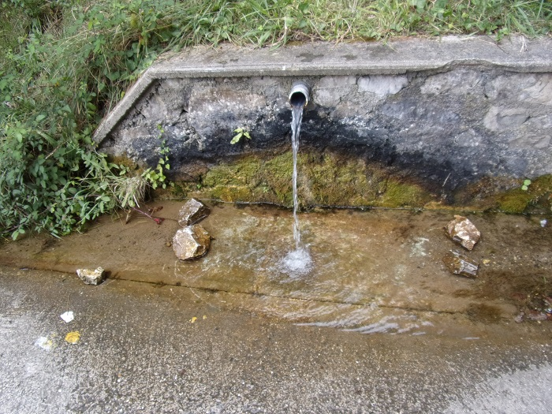
A la sortie des gorges, coté Axat se trouve la résurgence d'une source, 2 tuyaux guides l'eau (il y en a un autre qui n'apparaît pas sur la photo). Le temps que je prenne la série de cliché sur les gorges j'ai pu voir au moins 5 voitures s'arrêter pour prendre de l'eau (sans compter les piétons...). Certaines avaient la malle pleine de bidons.